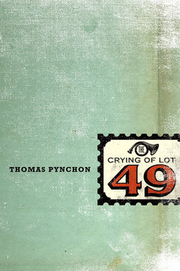

Reading Reflections
I was once almost a Comparative Literature major, but alas, my life changed direction. I still do enjor reading, although with school and work, it's taken me much longer to get through books.
I usually follow this technique where I reflect on specific quotes/paragraphs, and write these thoughts down on those larger colorful post it notes. It wokred for a while, but they've been getting crumbled and messy.
This is an attempt to somehow record these ideas and reflectons.
The Crying of Lot 49 by Thomas Pychon

"In an all-night Mexican greasy spoon off 24th, she found a piece of her past, in the form of one Jesus Arrabal…Standing not for the agency you think, but for a clandestine Mexican outfit known as the Congregacion de los Insurgentes Anarquistas, traceable back to the time of the Flores Magon brothers and after briefly allied with Zapatista.
‘You see, in exile’ waving his arm around at the place. He was part-owner here with yucateco who still believed who still believed in the Revolution. Their Revolution (p. 96-97)"